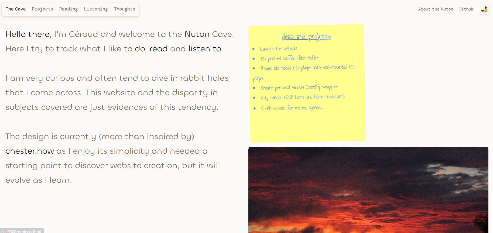

Nuton Cave Website
Personal website to showcase my projects and in the same time learn the basics of web development.
- web development
- personal project
Context
While looking for a job (still looking btw, connect with me!) I wanted to keep learning and building new skills. That's when I started playing with web development.
Realization
I started playing with AI and web development, this site as almost everything nowadays is built with the help of AI. However I did not simply ask to build this website, I kept asking for information and tried to build as much as possible myself, because that's my view on AI, a powerful tool that needs first to understand what is done to be effective.
In the beginning, I focused on learning the fundamentals of web development and how to integrate AI tools into my workflow. I made a first page highly inspired by Chester.How, with a grid system that would able me to show different projects. I tried to integrate a simple design in the shape of a post-it, but was not completely convinced by the result. In the meantime, I also started to construction of a personal Spotify weekly wrapped, as the company only provides this kind of information on a year time.

After a few months, I decided to rebuild the homepage to create a more interactive experience. I wanted to create a desk where the user could find different projects and information about me. This is how the current design of the homepage came about; it is designed to be adaptable, where the new projects will be added over time in the shape on new objects placed on the walls or the desk.
Future
There are a few ideas and projects that I want to create and implement in the future.
- Finish the implementation of the personal Spotify wrapped feature, the data recovery process is ready (explained here), but I still need to find a satisfactory way to show them.
- Create the reading section, with a display of the books I've read and a sorting mechanism.
- Develop the thought section, type of a blog/journal, but still in brainstorming phase.
History
- September 2026
- Rebuilding of the homepage to create an interactive desk.
- June 2026
- Start of the project and first design of homepage.